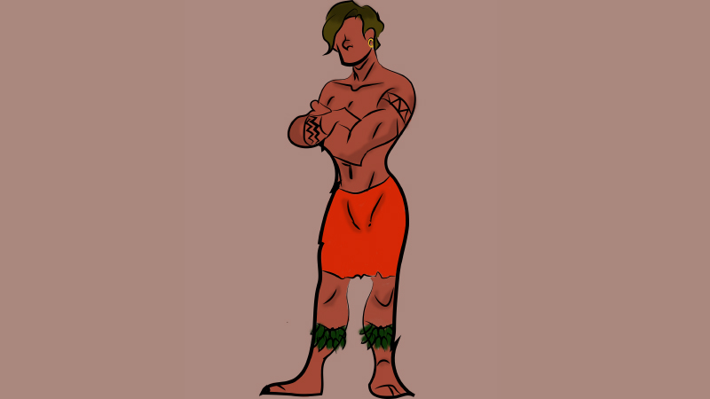
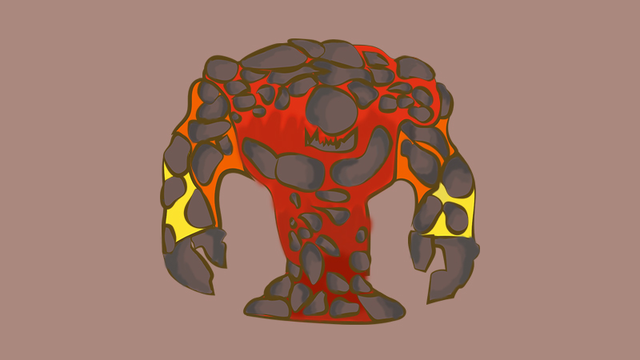

The Tale of the Lava Rock Man
The Tale of the Lava Rock Man is about a lava rock man who has been stuck in a cave for 100 years. He has no way of getting out because he is literally part of that cave. What he doesn’t know is that he had very special powers of bending lava and rock, as well as basic human movement. We as the audience know that he is moving with some intention. However, the lava rock does not. Gradually in the animation, he realizes that all along he had intention and emotion through the way he moved, and it eventually set him free.

Summer Lacuin
Summer Lacuin is a designer from New Jersey aspiring to become a full time 3D/2D modeler and animator. Most of her projects involve motion as well as design.
FIRST Rough draft of animation.
By giving the viewers the ability to imagine what would happen if nature could move with human intention and even push natures powers to the point where they have more control over their natural movement, it can show how powerful motion can be, by giving superhuman powers to a natural object and eventually still have the viewers emotionally connect to it somehow. Generally, the main point is to have the viewers have a special connection with the rock, whatever it may be.

Character's full human transformation within Tale of the Lava Rock Man.

Character's rock form within Tale of the Lava Rock Man.